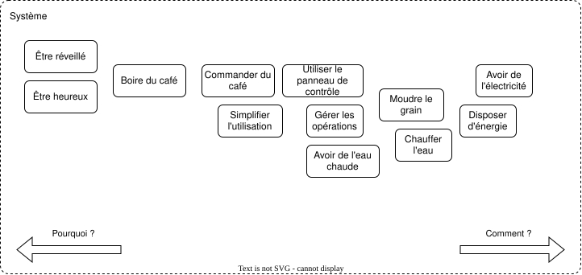
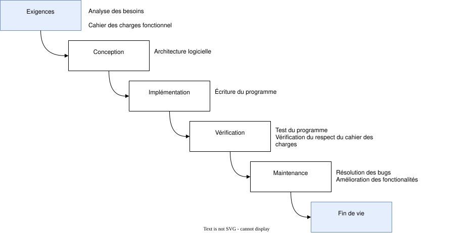

Travail en équipe¤
Aucune de nous ne sait ce que nous savons tous ensemble.
Introduction¤
Dans le monde du développement logiciel, le travail en équipe est incontournable. Très rarement vous travaillerez seul sur un projet, surtout dans un contexte professionnel. La collaboration avec d'autres développeurs, testeurs, chefs de projet, graphistes, commerciaux, et autres acteurs est essentielle pour réussir. Savoir travailler en équipe est donc une compétence cruciale à développer pour tout professionnel du secteur.
Travail en entreprise¤
Le travail en entreprise, qu'il s'agisse d'une petite ou d'une grande structure, présente des dynamiques et des défis uniques. Selon la taille de l'entreprise, les méthodes de travail, la communication et la gestion des responsabilités peuvent varier considérablement. Il est important de comprendre ces différences pour mieux s'adapter aux environnements professionnels variés et pour anticiper les défis potentiels. Une fois sorti de l'école, vous aurez le choix entre travailler dans une start-up, une PME, une grande entreprise ou même en freelance. Chacun de ces environnements a ses avantages et ses inconvénients.
Petite entreprise¤
Dans une petite entreprise, les équipes sont souvent réduites (souvent 2 à 5 personnes), ce qui favorise une communication directe et une grande flexibilité. Les rôles peuvent être moins définis et plus polyvalents, chaque membre de l'équipe étant susceptible de porter plusieurs casquettes. Cette polyvalence peut être stimulante, car elle offre l'opportunité d'acquérir une variété de compétences et de participer à divers aspects du projet. En qualité d'électronicien vous serez amené à gérer des projets de A à Z, et vous investir aussi dans le développement logiciel. Vous pourriez être amené à faire vous même les choix technologiques selon vos critères de sélection.
La prise de décision dans une petite entreprise est aussi généralement plus rapide. Les hiérarchies sont souvent plates, et il est plus facile de collaborer directement avec les dirigeants ou les fondateurs. Cette proximité permet de réagir rapidement aux changements, d'innover plus facilement, et de mettre en œuvre des idées sans passer par de longs processus de validation. En outre, les relations de confiance peuvent permettre d'avoir carte blanche pour explorer de nouvelles idées et de prendre des initiatives.
Cependant, cette flexibilité a aussi ses limites. Le manque de ressources peut parfois conduire à une surcharge de travail, où les employés doivent jongler entre plusieurs responsabilités. Cela peut créer des tensions si les priorités ne sont pas bien gérées. De plus, l'absence de processus formalisés peut entraîner des conflits de responsabilité, surtout lorsque les tâches ne sont pas clairement assignées.
Une petite entreprise ou start/up vit souvent au jour le jour, et les priorités peuvent changer rapidement. L'attitude est à la survie, la recherche de financement, et la croissance. Les projets sont souvent courts, et les équipes sont amenées à pivoter rapidement en fonction des retours clients.
En termes de développement logiciel, cela se traduit par des projets agiles, des itérations rapides, et une forte collaboration entre les membres de l'équipe. La communication est essentielle pour s'assurer que tout le monde est sur la même longueur d'onde et que les objectifs sont clairs. Exploiter au mieux la communité open-source est souvent une stratégie gagnante pour les petites entreprises, qui peuvent ainsi bénéficier de logiciels et de bibliothèques de qualité sans avoir à les développer elles-mêmes ce qui se traduit par un considérable gain de temps. Néanmoins, il est fondamental de bien comprendre les licences open-source pour éviter tout problème de conformité.
Le processus d'engagement de nouveaux employés est souvent rapide et basé sur le feeling humain davantage que par le niveau de qualification. Les compétences techniques sont importantes, mais la personnalité et la capacité à s'intégrer dans une équipe sont souvent des critères de sélection tout aussi importants. D'autre part, les petites entreprises n'ont pas toujours les moyens de proposer des salaires compétitifs, mais elles peuvent offrir des avantages en nature, des opportunités de croissance rapide, et une ambiance de travail conviviale.
Grande entreprise¤
Dans une grande entreprise (300..50'000 employés), les processus sont beaucoup plus formalisés et structurés. Bien que cela puisse assurer une certaine cohérence et standardisation dans les pratiques de travail, cela condut inévitablement à une inertie organisationnelle. Les décisions transitent par plusieurs niveaux hiérarchiques, ce qui peut ralentir l'innovation et rendre l'adaptation aux changements plus difficile.
Par ailleurs de nombreuses grandes entreprises adhèrent à des normes de qualité et de sécurité strictes, ce qui peut être un avantage pour les projets critiques. Les processus de validation et de test sont généralement plus rigoureux, ce qui garantit un niveau de qualité élevé. Cependant, cela peut aussi ralentir le cycle de développement et rendre les projets moins flexibles. La compliance avec la norme ISO 9001 est souvent un prérequis pour travailler avec des grandes entreprises. Elle impose une nomenclature stricte, des processus de validation et de test, et une documentation complète des projets qui sont on un impact non négligeable sur le temps de développement et la motivation des équipes qui peuvent se sentir bridées dans leur créativité et peuvent sembler faire trop de paperasse administrative sans valeur ajoutée.
Le cloisonnement (ou « silos ») est un phénomène courant dans les grandes entreprises. Les différents départements ou équipes peuvent fonctionner de manière relativement autonome, avec peu d'interactions entre eux. Ce cloisonnement est souvent la source de tensions lorsqu'il y a un manque de communication ou de coordination entre les équipes. Par exemple, une équipe de développement peut se retrouver en conflit avec une équipe de marketing si les objectifs ne sont pas alignés ou si les informations ne sont pas partagées efficacement. Il n'est pas rare que le département des ventes promette des fonctionnalités qui ne sont pas encore développées, ou que le département marketing communique sur des dates de sortie qui ne sont pas encore fixées ou qui ne sont pas réalistes. Ces décalages peuvent entraîner des frustrations et des malentendus, et nuire à la qualité du produit final, notament en coupant les coins ronds pour respecter des délais irréalistes. Cela se traduit dans le développement par des dettes techniques croissantes et des retours de flamme parfois catastrophiques.
Le cloisonnement peut également entraîner des conflits de responsabilité. Dans une grande entreprise, il peut être difficile de savoir qui est responsable de quoi, surtout lorsque plusieurs équipes travaillent sur un même projet. Les problèmes de coordination peuvent mener à des malentendus, des retards, et même à des conflits internes lorsque des tâches importantes sont négligées ou mal exécutées. Les décisions se prennent souvent en comité de direction sans l'avis des équipes techniques qui sont souvent les plus à même de comprendre les implications techniques des décisions prises. Cela mène souvent à des décisions non optimales.
La complexité des structures hiérarchiques dans les grandes entreprises peut aussi engendrer des frustrations. Les employés peuvent se sentir éloignés des décideurs et avoir l'impression que leurs contributions individuelles passent inaperçues. Par ailleurs, le besoin de se conformer à des processus rigides peut parfois étouffer la créativité et l'innovation, rendant les employés moins enclins à proposer de nouvelles idées. Les employés peuvent se sentir n'être que des numéros. Néanmoins c'est une ligne décisionnelle de s'assurer qu'un employé ne devienne pas indispensable pour l'entreprise, et que le savoir soit partagé entre les membres de l'équipe afin d'éviter le « bus factor » (si un employé se fait renverser par un bus, l'entreprise ne doit pas s'arrêter de fonctionner).
Cependant, travailler dans une grande entreprise offre aussi de nombreux avantages. Les ressources disponibles sont souvent plus importantes, permettant un meilleur accès à des formations, des technologies avancées, et des opportunités de développement de carrière. La spécialisation des rôles peut aussi permettre aux employés de devenir experts dans un domaine particulier, avec un soutien organisationnel plus structuré. L'accès à des logiciels de pointe et à des ressources de formation est souvent plus facile dans une grande entreprise, qui peut se permettre d'investir.
Le processus d'engagement dans une grande entreprise est souvent plus formel et structuré, avec des entretiens multiples, des tests techniques, et des évaluations approfondies. Les compétences techniques, notament en génie logiciel sont évaluées par un code interview qui nécessite de résoudre des problèmes algorithmiques en temps limité.
Comparaison des dynamiques¤
La différence fondamentale entre une petite et une grande entreprise réside dans la manière dont les processus et la communication sont gérés. Dans une petite entreprise, la rapidité et la flexibilité sont souvent privilégiées, mais cela peut se faire au détriment de la clarté des rôles et des responsabilités. À l'inverse, dans une grande entreprise, la structure et les processus sont plus établis, mais cela peut engendrer de l'inertie et des défis en termes de collaboration inter-équipes.
Équipe de développement¤
Dans le domaine du développement logiciel, une équipe de développement réunit plusieurs personnes ayant des compétences diverses et complémentaires. Dans les grandes entreprises ces rôles sont très souvent cloisonnés, alors que dans les petites entreprises, les membres de l'équipe peuvent être amenés à porter plusieurs casquettes. Néanmoins on retrouve généralement les rôles suivants :
- Chef de projet
-
Responsable de la gestion globale du projet, il assure la coordination des équipes et veille à ce que le projet soit livré dans les délais, dans le respect du budget et avec le niveau de qualité attendu. Il est le point de contact principal entre l'équipe technique et les parties prenantes.
- Développeur
-
Il a pour mission de concevoir, écrire, tester et documenter le code du logiciel. Les développeurs peuvent être spécialisés dans différents domaines (front-end, back-end, full-stack, etc.), chacun apportant une expertise particulière au projet.
- Testeur
-
Spécialisé dans l'assurance qualité, le testeur vérifie que le logiciel fonctionne comme prévu, en identifiant les bugs et en s'assurant que toutes les fonctionnalités respectent les exigences définies. Le rôle du testeur est essentiel pour garantir un produit final fiable et performant.
- DevOps
-
Le DevOps est chargé de la gestion de l'infrastructure nécessaire au déploiement du logiciel. Il travaille à l'intégration continue, à la livraison continue, et à l'automatisation des processus de déploiement, garantissant ainsi que le code peut être déployé rapidement et en toute sécurité.
- Designer UX/UI
-
Bien que non mentionné initialement, il est important de noter que le designer UX/UI joue un rôle clé dans la conception de l'interface utilisateur et dans l'expérience utilisateur globale. Son travail est crucial pour s'assurer que le logiciel est non seulement fonctionnel mais aussi agréable et intuitif à utiliser.
Lorsque vous êtes mendaté pour évaluer l'effort de développement sur un projet, vous vous concentrez sur l'aspect technique du projet tout en restant très optimiste sur les délais. Vous avez tendance à sous-estimer le temps nécessaire pour résoudre les problèmes techniques et à surestimer votre capacité à les résoudre rapidement. Vous avez tendance à ignorer les aspects non techniques du projet, comme la documentation, les tests, et la communication avec les parties prenantes. En réalité, chacun des rôles précédemment mentionnés à une implication dans le projet. Il n'y a pas de règle générale mais une bonne approximation du temps entre les rôles pour le développement d'un logiciel est ⅓ pour le développement, ⅓ pour les tests, et ⅓ pour la documentation et la communication, d'où le facteur \(\pi\) fréquemment utilisé dans le calcul de l'effort de développement.
Méthodes de travail¤
Le choix de la méthode de travail est déterminant pour la réussite d'un projet. Voici un aperçu des méthodes les plus couramment utilisées en développement logiciel :
- Méthode en cascade
-
Traditionnellement, la méthode en cascade segmente le projet en plusieurs phases linéaires (analyse, conception, développement, test, déploiement). Chaque phase doit être complétée avant de passer à la suivante. Cette approche convient bien aux projets où les exigences sont claires et peu susceptibles de changer.
- Méthode agile
-
Les méthodes agiles sont plus flexibles et permettent de s'adapter aux changements fréquents des exigences. Le projet est divisé en plusieurs cycles courts appelés « sprints » (en Scrum) ou est géré en flux continu (en Kanban). Les itérations successives permettent de livrer rapidement des fonctionnalités et de recevoir des retours en continu, facilitant ainsi l'amélioration progressive du produit.
- Scrum
-
Un cadre agile populaire qui repose sur des itérations régulières (sprints) de 2 à 4 semaines, au cours desquelles une version du produit potentiellement livrable est développée. Scrum met l'accent sur la collaboration, l'adaptation et l'amélioration continue.
- Kanban
-
Une autre méthode agile qui se concentre sur la visualisation du flux de travail et la gestion continue des tâches. Le Kanban est particulièrement utile pour les équipes cherchant à améliorer l'efficacité et à réduire les goulots d'étranglement.
Outils de travail¤
Pour une collaboration efficace en équipe, l'utilisation d'outils adaptés est indispensable. Voici quelques-uns des outils les plus couramment utilisés :
- Gestion de version avec Git
-
Git est un système de gestion de versions distribué, permettant à plusieurs développeurs de travailler simultanément sur le même projet sans risquer de perdre des modifications ou d'écraser le travail des autres. Il est essentiel pour la collaboration en équipe, facilitant le suivi de l'évolution du code, la création de branches pour des fonctionnalités spécifiques, et la gestion des contributions grâce aux pull requests.
- Gestion de projet avec Trello
-
Trello est un outil visuel de gestion de projet basé sur des tableaux, des listes et des cartes. Chaque membre de l'équipe peut suivre l'avancement des tâches, ajouter des commentaires, des pièces jointes, et organiser le travail de manière claire et intuitive. Trello est particulièrement utile pour les équipes qui utilisent une méthode agile comme Kanban.
- Communication avec Slack/Teams/Discord
-
Ces outils de communication sont essentiels pour maintenir une communication fluide au sein de l'équipe, surtout dans un contexte de télétravail. Ils permettent non seulement de discuter en temps réel, mais aussi de partager des fichiers, de coordonner des réunions et de centraliser les échanges sur des canaux dédiés à différents aspects du projet.
- Intégration continue et déploiement continu (CI/CD) avec Jenkins/GitLab CI
-
Pour automatiser le processus de construction, de test, et de déploiement du logiciel, des outils de CI/CD comme Jenkins ou GitLab CI sont souvent utilisés. Ils permettent de réduire les erreurs humaines, d'accélérer le cycle de développement, et de s'assurer que le code reste toujours dans un état déployable.
Gestion des conflits¤
Le développement logiciel, nous ne cessons de le répéter, est un travail collaboratif, lequel peut parfois donner lieu à des conflits. Ces conflits peuvent découler de différences de vision, de priorités ou de méthodes de travail entre les membres de l'équipe. Ils apparaissent lorsque le niveau d'implication ou d'engagement transgresse la barrière de l'émotionnel. Une grande implication dans un projet peut entraîner des jalousies. La frustration d'avoir l'impression d'en faire davantage que les autres est une source courante de conflits car elle peut être perçue comme une injustice. Elle peut pousser un employé à d'imisser dans les affaires des autres, à critiquer leur travail, ou à les dénigrer. Apprendre à identifier, gérer et résoudre ces conflits de manière efficace est crucial pour maintenir une dynamique de travail productive et harmonieuse.
Identifier les sources de conflits¤
Les sources de conflits peuvent varier selon le contexte de l'entreprise, mais certaines causes sont récurrentes dans le développement logiciel :
- Différences de vision ou d'objectifs
-
Dans les grandes entreprises, les différents départements (développement, marketing, ventes) peuvent avoir des objectifs qui ne s'alignent pas toujours, créant des tensions sur la direction à prendre pour le projet. Dans une petite entreprise, ces conflits peuvent survenir entre les membres de l'équipe qui ont des idées divergentes sur les priorités du projet.
- Problèmes de communication
-
Le manque de communication est une source fréquente de conflits. Dans une petite entreprise, la communication directe peut parfois manquer de formalisme, ce qui peut entraîner des malentendus. Dans une grande entreprise, le cloisonnement entre les équipes peut empêcher la circulation d'informations cruciales, exacerbant les tensions. C'est pourquoi il est essentiel de documenter les décisions prises et de les communiquer clairement à l'ensemble de l'équipe par des communiqués concis.
- Conflits de responsabilités
-
Les zones grises concernant les responsabilités peuvent provoquer des conflits, surtout dans les grandes entreprises où les rôles sont très spécialisés. Dans les petites entreprises, où les membres de l'équipe doivent souvent assumer plusieurs rôles, la répartition floue des tâches peut également être source de désaccords.
- Pression des délais
-
La pression pour respecter les délais peut intensifier les conflits, particulièrement lorsque les attentes sont mal gérées. Cela est particulièrement vrai dans les grandes entreprises où les processus rigides peuvent ajouter une pression supplémentaire, mais c'est aussi un défi dans les petites entreprises où les ressources sont souvent limitées.
Techniques de résolution de conflits¤
Une fois les sources de conflits identifiées, il est essentiel d'avoir des techniques efficaces pour les résoudre. Voici quelques approches courantes :
- Communication ouverte
-
Encourager un dialogue ouvert et honnête est la première étape pour résoudre un conflit. Dans une petite entreprise, cela peut signifier organiser des réunions régulières où chaque membre peut exprimer ses préoccupations. Dans une grande entreprise, cela peut nécessiter la mise en place de canaux de communication formels pour s'assurer que les préoccupations sont entendues et traitées.
- Mise en place de processus clairs
-
Établir des processus clairs pour la gestion des responsabilités et des tâches peut prévenir de nombreux conflits. Dans les grandes entreprises, cela implique souvent l'utilisation d'outils de gestion de projet et de documentation précise. Dans les petites entreprises, il peut être utile de formaliser certains aspects de la collaboration pour éviter les malentendus.
- Compromis et négociation
-
Souvent, la résolution des conflits nécessite un compromis. Apprendre à négocier des solutions qui satisfont les différentes parties est une compétence clé. Dans les grandes entreprises, cela peut impliquer des discussions entre les départements pour aligner les objectifs. Dans les petites entreprises, cela peut signifier que les membres de l'équipe doivent être prêts à ajuster leurs attentes et priorités.
- Feedback constructif
-
Donner et recevoir du feedback de manière constructive peut aider à désamorcer les conflits avant qu'ils ne s'intensifient. Dans un environnement de petite entreprise, où les relations sont souvent plus personnelles, le feedback doit être donné avec tact pour maintenir une bonne ambiance de travail. Dans les grandes entreprises, des systèmes formels de feedback peuvent être mis en place pour encourager une communication régulière.
Importance de l'empathie¤
L'empathie joue un rôle crucial dans la gestion des conflits, surtout dans un cadre collaboratif comme le développement logiciel. Être capable de se mettre à la place de ses collègues et de comprendre leurs perspectives permet de mieux aborder les conflits de manière constructive.
L'écoute active est une compétence essentielle pour manifester de l'empathie. Cela signifie écouter non seulement les mots de l'autre personne, mais aussi essayer de comprendre les émotions et les motivations sous-jacentes. Dans une petite entreprise, où les relations sont souvent plus proches, cela peut contribuer à renforcer la cohésion d'équipe. Dans une grande entreprise, où les interactions peuvent être plus formelles, l'écoute active peut aider à dépasser les barrières organisationnelles.
La reconnaissance des besoins des autres est aussi fondamentale. Reconnaître que chaque membre de l'équipe a des besoins et des contraintes différentes est essentiel. Par exemple, un développeur peut être sous pression pour livrer du code rapidement, tandis qu'un testeur peut avoir besoin de plus de temps pour assurer la qualité. Dans une grande entreprise, la reconnaissance de ces différences peut aider à aligner les équipes sur des objectifs communs. Dans une petite entreprise, cela peut éviter les frustrations liées à des attentes irréalistes.
Gérer un projet logiciel¤
Comme nous l'avons vu précédemment, la gestion d'un projet logiciel implique de nombreuses étapes qu'il est important de ne pas courtcircuiter. Cela passe souvent par une analyse fonctionnelle et l'élaboration d'un cahier des charges fonctionnel.
Le processus est itératif et récursif. Bien qu'il y ait un ordre d'étapes à suivre, il est souvent nécessaire de revenir en arrière pour ajuster les spécifications en fonction des retours utilisateurs ou des contraintes techniques.
Cahier des charges fonctionnel¤
Analyse des cas d'utilisation¤
La première étape est l'analyse des cas d'utilisation, qui consiste d'une part à identifier les utilisateurs du système et d'autre part les interactions qu'ils auront avec le système. Cette analyse permet in fine de démarrer l'analyse des besoins.
On peut représenter les cas d'utilisation sous forme de diagrammes de cas d'utilisation qui fait partie du standard UML (Unified Modeling Language). Un diagramme de cas d'utilisation est un diagramme qui montre les acteurs, les cas d'utilisation et les interactions entre eux.
Imagions que nous devons développer un système qui prendra la forme d'une machine à café connectée. Identifier les acteurs doit être la première étape.
Il ne faut pas hésiter faire preuve d'imagination et d'être exausitif. Dans notre exemple, les acteurs pourraient être :
- l'utilisateur qui souhaite boire un café ;
- le technicien qui doit entretenir la machine ;
- le service client qui doit répondre aux questions des utilisateurs ;
- l'entreprise qui veut encourager la productivité au travail ;
- l'opérateur de service.
Le diagramme suivant montre la représentation de ces cas d'utilisation.

À partir de ce diagramme, on peut déduire les besoins fonctionnels du système. Par exemple, le cas d'utilisation « Règlage de la mouture » implique que le système doit être capable d'offir une interface utilisateur permettant de régler la mouture du café. Le cas d'utilisation « Maintenance » implique que le système doit être capable de détecter les pannes et de les signaler à l'utilisateur.
Il se peut que des utilisateurs ou des actions inutiles ait été ajoutées ou qu'il en manque. Ce n'est pas un problème à ce stade de l'exercice car le processus de réflexion est itératifs. On peut revenir plus tard sur le diagramme pour l'ajuster et consolider les hypothèses initiales.
Analyse du besoin¤
L'analyse du besoin est la seconde étape dans la gestion d'un projet d'ingénierie ou de génie logiciel. Elle consiste à identifier les besoins des utilisateurs finaux qui ont été identifiés plus haut. Ceci permettant par la suite d'identifier les fonctionnalités du logiciel en conséquence. Cette étape permet de s'assurer que le logiciel répondra aux attentes des utilisateurs et qu'il sera adapté à leur contexte d'utilisation.
L'analyse du besoin utilise deux armes redoutables, la question « Comment » et la question « Pourquoi ». Hiérarchiquement un « Comment » permet de rentrer dans le détail, on descend dans le niveau de granularité. Un « Pourquoi » permet de remonter dans la hiérarchie, de comprendre les motivations et les objectifs des utilisateurs. L'exercice doit pouvoir se répéter jusqu'à ce que la réponse sorte du cadre du projet. Cela permet de fixer le cadre général du projet.
- Pourquoi l'utilisateur veut-il boire un café ? Parce qu'il aime le café !
- Pourquoi il aime le café ? Parce qu'il a besoin de se réveiller le matin !
- Pourquoi il a besoin de se réveiller le matin ? Parce qu'il doit aller travailler !
- Pourquoi il doit aller travailler ? Parce qu'il a besoin d'argent !
- Pourquoi il a besoin d'argent ? Parce qu'il a besoin de payer son loyer !
- Pourquoi il a besoin de payer son loyer ? Parce qu'il a besoin de survivre !
Dans le cadre du système auquel on s'intéresse, il n'est pas essentiel de répondre à toutes les questions. Certaines sortent du cadre, mais cela permet de comprendre les motivations des utilisateurs et de s'assurer que le système répondra à leurs besoins. Cela permet de faire des parallèles avec d'autres acteurs du système. Car un utilisateur réveillé est plus productif, et une entreprise qui a des employés productifs est plus rentable. L'exercice peut se répéter pour chaque acteur du système.
Analyse FAST¤
En pratique une bonne analyse est l'analyse FAST pour Function Analysis System Technique. Elle permet de décomposer les fonctions du système en sous-fonctions, en sous-sous-fonctions, etc. jusqu'à obtenir des fonctions élémentaires. Cela permet de définir les besoins fonctionnels du système de manière exhaustive.
Un diagramme FAST est bidimensionnel. Horizontalement sont représentés des fonctions du systèmes. En se dirigeant à droite, on répond à la question « Comment », en se dirigeant à gauche on répond à la question « Pourquoi ». Verticalement on peut représenter le « Quand » ou l'ordre de priorité des fonctions.


Une fonction s'écrit sous la forme d'un verbe à l'infinitif suivi d'un complément d'objet. Par exemple « Préparer du café » ou « Détecter une panne ».
Cette analyse se réalise en équipe. La discussion doit être ouverte et constructive sans contraintes hiérarchiques. Chaque membre de l'équipe doit pouvoir s'exprimer librement et proposer des idées. L'objectif est d'être exaustif et de ne rien laisser de côté.
Analyse du besoin¤
Une fois l'analyse FAST réalisée, le besoin de chaque utilisateur peut être identifié. Un besoin d'exprime sous la forme "J'ai besoin de fonction". Les besoins des utilisateurs. Par soucis de redondance, le libellé du besoin sera simplement la fonction.
On exprime les besoins sous forme d'une table, où chaque ligne est numérotée. Le numéro peut être hiérarchique mais il est préfixé par un identifiant unique. Par exemple le besoin « N3.2 », avec N pour Need en anglais.
| ID | Besoin |
|---|---|
| N1.1 | Être réveillé au travail |
| N1.2 | Être productif au travail |
| N1.3 | Partager un moment avec ses collègues |
| N1.4 | Apprécier l'expérience |
À chaque instant, chaque besoin peut être questionné. On doit pouvoir répondre à aux deux questions « Comment » et « Pourquoi ». Si un besoin ne peut pas être justifié, il n'a pas sa place dans la liste.
L'opération est répétée pour chaque acteur du système en veillant à ce que les besoins soient cohérents entre eux.
Il n'est pas toujours évident de positionner le besoin. Par exemple la question « Pourquoi dois-je être productif au travail » peut mener à des questions philosophiques ou existentielle sur le sens de la vie, la place de la société capitaliste, etc. Bien que ces questions soient pertinentes dans un cadre plus large, il est primordial d'identifier le cadre du projet et de ne pas s'en écarter.
Un aspect important est également les contraintes extérieures. Souvent un client contacte une entreprise avec une idée de projet en tête. Le client pense savoir ce qu'il veut, il a déjà réalisé des études de marché, des étude de design ou d'ergonomie. Malheuresement l'expérience montre que le client n'a pas toujours raison. Il n'est pas rare qu'il ait courtcircuité l'analyse fonctionnelle de son produit et mal identifié ses besoins. Même si ce n'est pas toujours possible, ni diplomatiquement évident, il est essentiel de remettre en question les besoins du client pour les consolider.
Une fois les besoins des utilisateurs identifiés, l'étape suivante est d'identifier les besoins du système à concevoir. Chaque besoin doit pouvoir être relié à un besoin utilisateur. Si on identifie à posteriori un besoin du système qui n'est pas relié à un besoin utilisateur, il est probable que ce besoin du système n'a pas sa place dans le projet ou alors que l'on ait oublié un besoin utilisateur ce qui peut conduire à une nouvelle itération du processus d'analyse.
Les besoins du système pourraient être :
| ID | Besoin | Relié à |
|---|---|---|
| N6.1 | Préparer du café | N1.1, N3.4 |
| N6.2 | Diagnostique automatique de panne | N1.1, N2.2 |
| N6.3 | Offir une boisson de qualité | N1.4 |
| N6.4 | Proposer des boissons variées | N1.4 |
| N6.5 | Disposer d'une interface utilisateur intuitive | N1.4 |
| N6.6 | Produire un café rapidement | N1.3, N5.4 |
| N6.7 | Produire du café à la chaîne | ... |
Il est important de noter qu'un système même complexe peut être réduit à une liste de besoins élémentaires qui tiennent sur les doigts d'une ou de deux mains. À ce stade de l'analyse il n'y a pas de place pour des détails techniques ou les grandeurs physiques.
Analyse fonctionnelle¤
L'analyse fonctionnelle est la troisième étape. Elle consiste à définir les fonctions du système à concevoir pour répondre aux besoins du système et donc des utilisateurs. Cette étape permet de déterminer les différentes tâches que le système devra réaliser pour satisfaire les besoins identifiés. Une fonction est exprimée sous forme d'une exigence fonctionnelle. Elle doit être claire, précise et non ambiguë. Elle comportera une dizaine de mots maximum et sera rédigée sous la forme d'un verbe à l'infinitif suivi d'un complément d'objet. Les verbes tels que définis par les Directives ISO/IEC Partie 2 : Principes er règles de structure et de rédaction des documents ISO et IEC (ISO/IEC DIR 2) est une excellente base, à la fois pour la rédaction du cahier des charges et pour la rédaction des exigences fonctionnelles. Le chapitre 7.2 défini comment une exigence doit être rédigée. On notera :
| Forme verbale | Description |
|---|---|
| Doit | Obligation de disposer de la fonctionnalité |
| Peut, Devrait | Exigence optionnelle, facultative |
| Ne doit pas | Interdiction de disposer de la fonctionnalité |
| Ne devrait pas | Recommendation de ne pas disposer de la fonctionnalité |
Les exigences fonctionnelles sont également numérotée par exemple avec le préfixe F pour Function. Une exigence fonctionnelle doit pouvoir être reliée par la question « Pourquoi » à un besoin du système, lequel par la même question être amené aux besoins des utilisateurs. Cela permet de s'assurer que chaque exigence fonctionnelle est justifiée par un besoin utilisateur.
Dans le cadre de notre exemple, les exigences fonctionnelles pourraient être :
| ID | Exigence fonctionnelle | Relié à |
|---|---|---|
| F1.1 | Doit pouvoir moudre des grains de café | N6.3 |
| F1.2 | Doit disposer d'une réserve suffisante de grains | N6.6 |
| F1.3 | Doit pouvoir être relié à une source d'eau | N6.7 |
Dans une analyse fonctionnelle on découpe généralement le système en différentes catégories :
- Fonctions de service
-
Les fonctions de service sont les fonctions qui permettent au système de fonctionner correctement. Elles sont souvent invisibles pour l'utilisateur final mais essentielles pour le bon fonctionnement du système. Par exemple, la fonction « F1.3 » qui permet au système d'être relié à une source d'eau.
- Fonctions de contrainte
-
Les fonctions de contrainte sont les fonctions qui imposent des contraintes sur le système. Elles peuvent être liées à des normes, des réglementations ou des contraintes techniques, comme l'assurance qualité ou la sécurité, ou de l'hygiène.
- Fonctions de support
-
Les fonctions de support sont les fonctions qui permettent au système de s'adapter à son environnement. Elles peuvent être liées à l'ergonomie, à l'interface utilisateur, ou à la maintenance du système.
Selon le projet et la complexité du système, il peut être nécessaire de définir d'autres catégories de fonctions.
Analyse organique¤
L'analyse organique est la quatrième étape. Elle consiste à définir les organes du système à concevoir pour réaliser les fonctions identifiées. Cette étape permet de déterminer les différentes parties du système qui devront être conçues pour réaliser les fonctions identifiées. Un organe est une partie du système qui réalise une ou plusieurs fonctions. Il peut être un composant matériel, un logiciel, un sous-système, ou une combinaison de ces éléments. Chaque organe doit être clairement identifié et décrit dans le cahier des charges.
Chaque organe identifié peut lui-même disposer de ses propres besoins, ses propres fonctions et ses propres exigences. Il est important de s'assurer que chaque organe est cohérent avec les fonctions qu'il doit réaliser et qu'il est en mesure de satisfaire les exigences qui lui sont associées. De surcroît les questions « Comment » et « Pourquoi » doivent permettre de suivre chaque organe dans sa hiérarchie.
Spécification technique¤
La cinquième étape est l'identification des spécifications techniques attendues pour le système, et pour chaque organe du système. Cette étape permet de déterminer les caractéristiques techniques du système, les contraintes techniques à respecter, et les normes à suivre.
Une spécification doit être vérifiable, c'est-à-dire qu'à la fin du projet, on doit pouvoir vérifier que chaque élément de la spécification a été respecté et est dans les normes acceptables.
Table : Spécifications techniques
| ID | Spécification technique | Min | Nom | Max | Unité | Relié à |
|---|---|---|---|---|---|---|
| S1.1 | Durée de mouture pour un café | 20 | 30 | s | F... | |
| S1.2 | Capacité de la réserve | 1 | 2 | 3 | kg | F... |
| S1.3 | Pression de l'eau | 1 | 2 | 5 | bar | F... |
On aura généralement différentes catégories de spécifications techniques :
- Spécifications fonctionnelles
- Spécifications de performance
- Spécification électriques
- Spécifications mécaniques
- Spécifications logicielles
À partir de cette spécification préliminaire il est possible, enfin, de rentrer dans la technique et de démarrer l'étude de développement en proposant une solution technique. Cela peut être un prototype, un plan, un schéma, un diagramme, etc. qui permettra de valider la faisabilité du projet.
Étude des solutions¤
Une fois le cahier des charges fonctionnel réalisé, on connaît les utilisateurs, les besoins, les fonctions du système, ses organes internes et les spécifications techniques attendues. Il est alors possible de proposer une solution technique pour le système. Cette solution technique doit permettre de réaliser les fonctions identifiées, de satisfaire les besoins des utilisateurs, et de respecter les spécifications techniques définies.
En termes logiciels cela peut être la proposition d'une architecture logicielle, d'une base de données, d'une interface utilisateur, des choix technologiques (langage de programmation, framework, etc.), des outils de développement, etc.
En termes matériels cela peut être la proposition d'un schéma électrique, d'un plan mécanique, d'un choix de composants, d'une architecture matérielle, etc.
Développement¤
Une fois la solution technique validée, il est possible de passer à l'étape de développement du système. Cette étape consiste à réaliser les organes du système, à les assembler, à les tester, et à les valider. C'est à ce moment que l'on passe de la théorie à la pratique, de la spécification à la réalisation.
Modèles de développement¤
Il existe de nombreux modèles de développement logiciel, chacun ayant ses avantages et ses inconvénients. Voici les deux modèles les plus couramment utilisés :
Modèle en cascade¤
Le modèle en cascade est un modèle linéaire qui divise le projet en plusieurs phases distinctes (analyse, conception, développement, test, déploiement). Chaque phase doit être complétée avant de passer à la suivante. Ce modèle convient bien aux projets où les exigences sont claires et peu susceptibles de changer.
Le modèle en cascade suivant résume le cycle de développement d'un programme. Il s'agit d'un modèle simple, mais qu'il faut garder à l'esprit que ce soit pour le développement d'un produit logiciel que durant les travaux pratiques liés à ce cours.


Modèle en V¤
Le modèle en V est une extension du modèle en cascade qui met l'accent sur la validation et la vérification à chaque étape du processus. Chaque phase de développement est associée à une phase de test correspondante